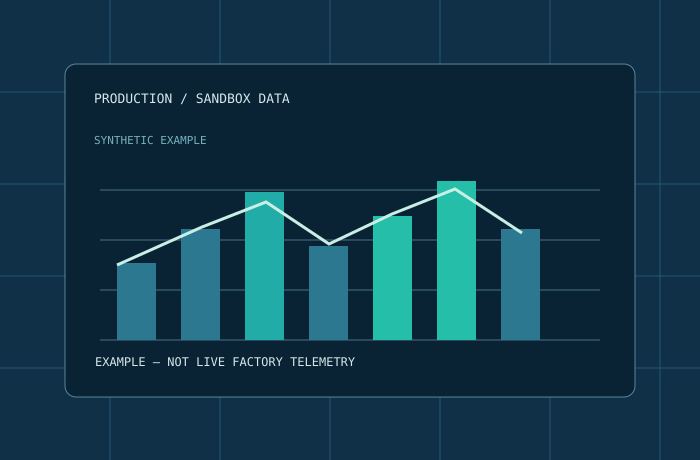

Technical services.
Clear deliverables.
Practical mechanical design and documentation support for engineering teams. Five focused capabilities, structured around the files you actually need.
Focus on the
engineering output.
Select a service to see potential deliverables, input requirements and the scope we can discuss. No unverified certification or manufacturing capacity is implied.
3D CAD modeling
From a sketch or an existing technical reference to clear parametric geometry. Models are prepared with an agreed use case and compatible interchange formats in mind.
What we can prepare
- Parametric part models
- Basic mechanical assemblies
- Geometry reconstruction from dimensioned drawings
- Step-by-step revision of existing design concepts
What we need from you
- Sketches or dimensional references
- Intended use and interfaces
- Expected level of detail
- Output format and project constraints

Manufacturing drawings
Structured 2D documentation to help a workshop or engineering team understand geometry, dimensions and design intent. Technical scope and acceptance criteria are agreed up front.
Typical deliverables
- PDF drawings with dimensions and notes
- Detail and assembly views
- Revision tables and part references
- DXF exports for compatible workflows
Important inputs
- Verified dimensions and datums
- Units, materials and surface requirements
- Tolerance requirements specified by client
- Drawing standard and revision expectations
BOM & documentation
A clear set of files can matter as much as the model. We structure parts lists, assemblies and handover documents so your team can review changes without searching across fragmented spreadsheets.
Typical deliverables
- Structured bills of materials
- Part numbering and document registers
- Exploded-view documentation concepts
- CSV / XLSX-friendly reporting tables
How we structure work
- Identify parts and source references
- Resolve missing or conflicting inputs
- Record revision and file names
- Deliver organized documents

CAD conversion & revisions
Geometry cleanup, compatible STEP and DXF interchange, controlled feature revisions and preparation of models for downstream review. Native files from proprietary systems are not promised without licensed access.
Typical deliverables
- STEP interchange where compatible
- DXF geometry and 2D exports
- Geometry reconstruction and corrections
- Revision summaries and annotated comparisons
Compatibility notes
- Confirm file extension before quoting
- Native NX / Inventor output not offered by default
- No DRM or license circumvention
- Sensitive files only after safe transfer is agreed
Engineering automation
Focused tools that reduce repetitive engineering administration: BOM comparisons, spreadsheet validation, file naming, report generation and analysis of industrial datasets.
Potential deliverables
- Python utilities and scripts
- BOM / CSV validation checks
- Data-cleaning and report workflows
- Technical dashboards using test or supplied data
Practical checks
- Input data and expected outputs
- Error handling and edge cases
- Environment requirements
- Validation by client before critical use
Formats, before fees.
File compatibility is agreed before any scope or price. FreeCAD provides a legal commercial CAD workflow but does not guarantee interchange with all proprietary native formats.
| Format | Use | Consideration |
|---|---|---|
| STEP (.step / .stp) | 3D geometry exchange | Feature history may not transfer |
| 2D drawing and document review | Not an editable CAD source | |
| DXF | 2D geometry exchange | Units and interpretation to confirm |
| CSV / spreadsheet | BOM and structured data | Column schema to agree |
| FreeCAD native | Editable project when appropriate | Version compatibility to agree |
| NX / Inventor native | Not part of default delivery | Requires a suitable commercial license |
Defined scope.
Dependable handover.
Send a short brief. We'll first clarify the requirements, deliverables and practical constraints.